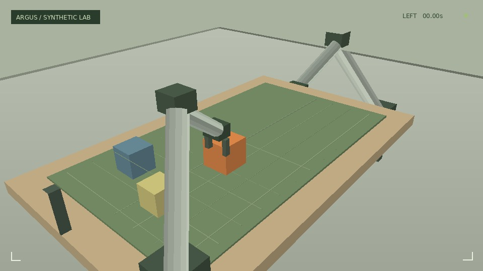
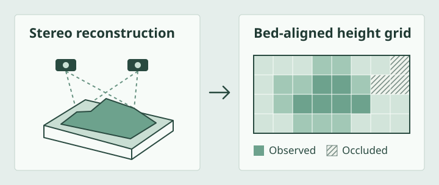
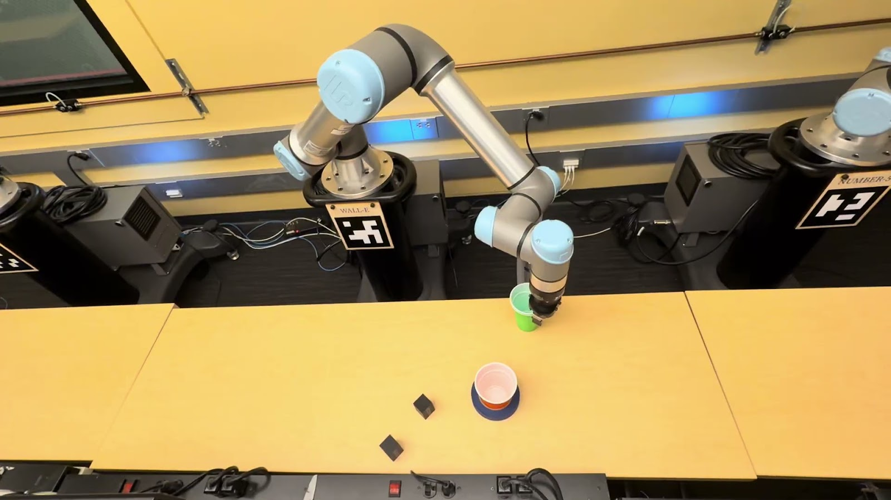
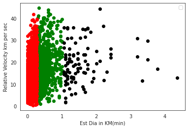

Source timestamps · retained frames · review decisions
Source timestamps · retained frames · review decisionsCygnus Robotics
Building data curation tools for robot learning: inspect demonstrations, preserve recovery behavior, and trace every retained frame back to its source.
Pranav Meraga / Engineering portfolio
I’m Pranav, a UC Berkeley aerospace engineer building Cygnus Robotics. My work spans robot data collection and curation, camera systems, and evaluations that make model failures inspectable.
Explore my workBUILDING CYGNUS ROBOTICS
Tools to inspect robot demonstrations, retain recovery behavior, and audit the frames selected for training.
SELECTED WORK
Source code, technical decisions, and measured evidence.
Source timestamps · retained frames · review decisionsBuilding data curation tools for robot learning: inspect demonstrations, preserve recovery behavior, and trace every retained frame back to its source.



An episode collection workspace for egocentric and wrist cameras, with multipart uploads, shared playback, and automatic alignment from recorded audio.

Reconstructed a load in metric 3D, aligned it to the truck bed, and evaluated how occlusion and registration affected the volume estimate.
Shared camera worker
GetFrameGetStreamCheckHealthA versioned camera API with fresh-frame reads, streaming JPEGs, health checks, and one shared latest-frame cache per camera.
From raw log to reviewable evidence
An investigation workspace that reconstructs production history, surfaces conflicting events, and connects job reviews to their original records.
Synthetic clinical pilot
A reproducible evaluation harness that separates semantic failures from infrastructure errors and compares matched control, challenge, and rescue prompts.
Designed biomedical agent tasks, verified statistical reference solutions, and audited paired responses and scoring rubrics. A longitudinal pain-decoder case shows how validation design changes a research decision.
A browser receives synthetic video over WebRTC, detects the ball from decoded pixels, and compares its position with timestamp-matched coordinates sent over WebTransport.

ROBOTICS / UC BERKELEY Watch demoHECTUR Head & eye control for UR7eHands-free robotic control using facial tracking, ROS 2, and MoveIt. I contributed the concept, early FaceMesh prototype, inverse-kinematics planning, and the live presentation.
Candidate retrieval
A candidate search engine combining vector and lexical retrieval, reciprocal rank fusion, cross-encoder re-ranking, and an LLM judge to evaluate role-specific criteria.
index(apex, metadata)
↓
SQLite dependency graph
↓
query(symbols, relationships)
↓
Compact context for agentsA Salesforce code-intelligence pipeline built as a machine learning engineering assessment. It indexes Apex and metadata into SQLite, then exposes deterministic, compact queries for LLM agents.
A portable benchmark runner that queues tasks, runs setup, agent, and grading phases in isolated Docker containers, and stores results for repeatable evaluation.
Improvements to a supplied futures backtesting system: PnL exception handling, crossed-quote validation, multi-strategy visualization, custom indicators, and unit tests.
An LLM agent for ARC grid puzzles, with structured prompts, text and JSON grid parsing, and an evaluation harness over 20 included puzzles.
A MacroBase-inspired pipeline that scores transactions, compares percentile thresholds, and explains anomalies with overrepresented categorical attributes.
RESEARCH
Machine learning meets engineering data.
NORTHWESTERN UNIVERSITY SUMMER 2022
Research under the Wing Kam Liu Group exploring asteroid data with machine learning. Northwestern’s Mechanistic Data Science website publishes my final report and presentation.
Read the final report (PDF)
Keyhole deformation classification in laser powder bed fusion · Northwestern research
Differential-drive control, real-time video, and obstacle avoidance · ESP-IDF / C
Exploring the relationship through engineering data analytics · UC Berkeley CE 93